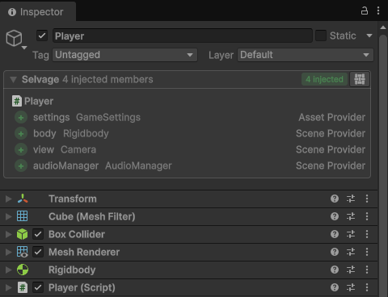
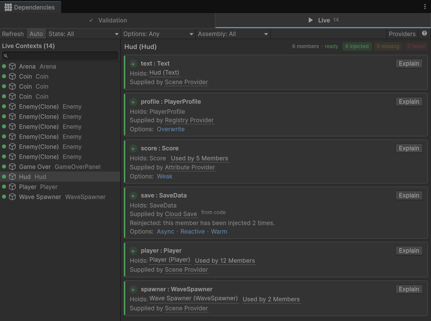
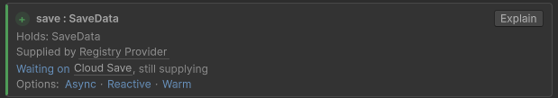

Inspect injected members
Display the state of each member
In Play mode, the Selvage section at the top of the Inspector window of a GameObject or an asset
displays the state of each member and the provider that gave its dependency. Select the section to expand it. While
editing, it does so for the members with the EditMode option.

Display what a member holds
The Live tab of the Dependencies window displays what injected members hold. To open it on a GameObject or an asset, select the Selvage button at the right of its Selvage section, then select Live. To open it from the menu, perform the following steps:
- Go to Tools > Selvage > Dependencies.
- Select Live.
- In the Live Contexts list, select a context, or select its GameObject in the Hierarchy window.
The Live Contexts list holds the contexts with injected members, grouped by scene. In Play mode,
it holds every such context. In Edit mode, it holds the contexts with
EditMode members.

For each member of the selected context, the tab displays the following:
- The value it holds. Select the value to ping the object.
- The provider that gave it, after Supplied by.
- Its state: Injected, Waiting, Missing or Failed. For a description of each, refer to Live tab.
To select several contexts, hold Ctrl or Shift.
Find out what a member waits for
A member that waits displays Waiting on, followed by the chain of what it waits for: the dependency it waits for, then what that dependency waits for, down to what holds up the chain, such as a provider that's still loading, or a script on an inactive GameObject that isn't injected yet. Each step links to its context or provider.

Find every member that holds an object
A dependency that several members hold displays Used by, followed by the number of members. Select it to list each member that holds the dependency.